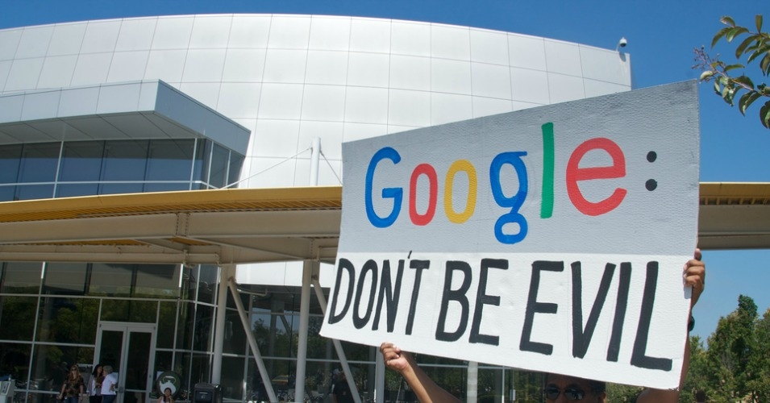
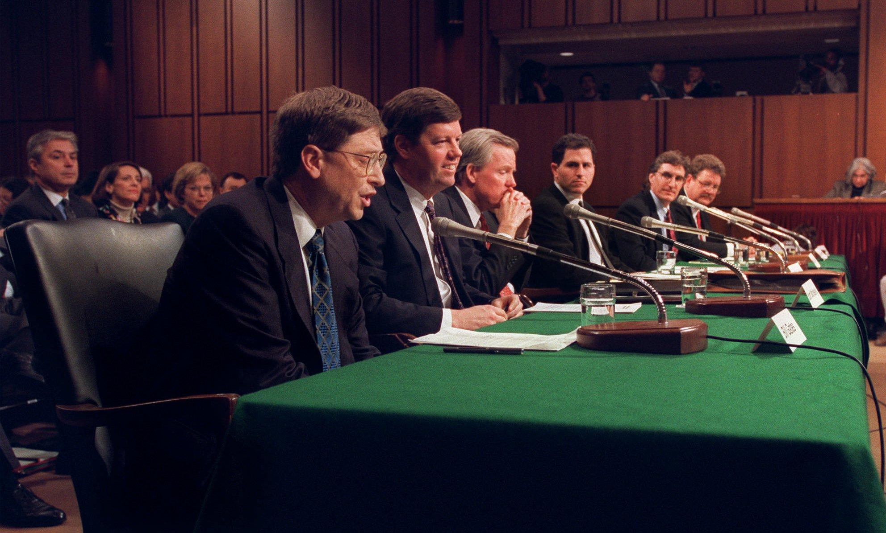

When I first read the readings, I was pretty invigorated and proud of the new wave of thought pervasive among a lot of the engineers that work at top tech companies. The idea that each of us is responsible for our own soul and should guide our actions based on our individual moral compass is not new— but truly letting that translate into our role in our job everyday is something I find truly remarkable. I believe that the position of the talented engineers that work at top tech companies is one of an advantage when it comes to leveraging their talent to have their voices heard.
The business decisions of a company can and should be a reflection of the moral fiber of its workforce.
If a company is engaging in acts that a person does not consider moral or something they do not feel comfortable with being a part of, they should have the option to first express their discontent (like many have done for example, at Google with their discontent over project Maven), and if nothing changes, they should make the decision to leave. Actions truly speak louder than words, and if the top talent of a company refuses to work on a project, that, to a leader or executive should mean something. It is incredibly ironic that Google's very own mantra was "Don't be evil." at one point, but it is good that the own workers are reminding the executives what Google set out to live by from the start.
 Protest in 2010. Copyright image by Steve RhodesI think this is extremely important because companies demand to be treated with the same rights as people, so they should be expected to have the same ethical and moral obligations and responsibilities too. It can be difficult to come to a standard as a company, but they have to listen to their own people and determine if a specific business deal is something their own people would stand behind.
 Image from an article discussing this antitrust case and making comparisons to the more recent Google antitrust case against the EU. The image can take you to the article (and the original picture)From the Microsoft case I was shocked to learn of everything that happened within the company before the investigation into antitrust started. It seems unfair that these giant companies use their position in a certain market to promote their product in another market. Some ground rules should be established and enforced by the government, as it was done with the oil companies and the phone companies. I was a bit confused when reading about how the decision to break up Microsoft was reversed. I didn’t understand why a judge’s decision was changed in a move that completely changed the future for Microsoft. However, it was in class that Professor Bui pointed out that the government itself and the change that occurred in the 2000 election changed everything. It truly makes me think that although the government should be a third party in an effort to crack down on antitrust violations by these companies, it is very much a changing entity in terms of how it approaches these judgments. I, however, was very impressed by the EU’s determination to set a precedent for holding these companies accountable for their actions.
All in all, my outlook on this is that innovation is the main channel affected by the concentration of market power in less than a handful of players. An innovative and creative economy incentivizes healthy competition among many key players, and I think that if the US wants to keep getting ahead (especially in technology) it has to be the one willing to regulate and check the growth of their own companies.